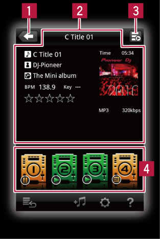

Pannelli di rekordbox
Pannello di collegamento (per CDJ/XDJ)
Modelli di applicabilità: CDJ-2000NXS/CDJ-900NXS/XDJ-1000

Modelli di applicabilità: CDJ-2000NXS/CDJ-900NXS/XDJ-1000
 Usato per tornare al livello superiore (pannello del browser).
Usato per tornare al livello superiore (pannello del browser). Le informazioni sui file audio vengono visualizzate qui.
Le informazioni sui file audio vengono visualizzate qui. Indica lo stato di riproduzione del lettore DJ al momento collegato.
Indica lo stato di riproduzione del lettore DJ al momento collegato. Toccando l’icona del lettore DJ, il file musicale viene caricato in quel lettore DJ.
Toccando l’icona del lettore DJ, il file musicale viene caricato in quel lettore DJ.